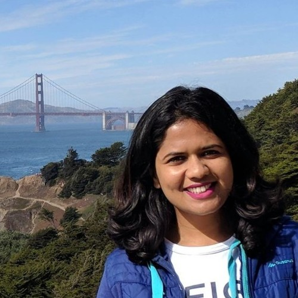

Figure - Schematic of the YOLOv3 framework. (Image credit)

Mrinal Joshi
Google LLC, Remote (July 2020-Present)
HERE Technologies, San Francisco (Sept 2017- Feb 2020)
University of California Santa Barbara (2017)
Software engineer with 5+ years of experience working in big-tech and cutting-edge machine learning & compute vision problems in automated driving. Skilled in development and deployment of scalable engineering solutions to well-defined and ambiguous problems. Motivated by the drive to contribute towards complete software development lifecyle of fast-paced high impact projects.
I believe successful organizations are driven by the passion of the people to work in collaboration to make possiblities real.
C++, Java, Python, Scikit-Learn, Deep Learning, Machine Learning, MATLAB, OpenCV, TensorFlow, AWS EC2, PostgreSQL, Test Driven Development (TDD), Unit and integration testing, Object Oriented Design (OOD), Data Structures & Algorithms, Git, Jira.
1. Lead contributor to Google Cloud geo-expansion efforts for reduction in cluster deployment time from weeks to days. (Project saved $30 million per annum)
♦ Spearheaded the design, implementation, integration testing, monitoring and production launch of several reliability projects in the GCE Compute team.
♦ Eliminated single point of failure global configuration pushes; downscoped configuration and data pushes to regional and zonal updates for enhanced reliability.
♦ Reduction in Google Compute Engine hardware deployment time saved the company in opportunity and hardware amortization costs.
2. Advocate for code health and led Java end-to-end test reliability improvements at Google.
♦ Initiated and drove reliability analysis of Java end-to-end tests to target engineering productivity and minimize technical debt.
♦ Achieved 4x reliability, improved flakiness, and developer velocity via refactored large unit tests. Upgraded JUnit4 Test Suite bulk tests to separate Java build targets. Resulted in faster execution and lower resource consumption.
♦ Initiatives recognized by the Healthys Silver Award (2021 Q3) - Google wide global award to highlight code health improvement efforts. Additional recognition through two spot bonuses for impactful reduction in number of test timeouts.
3. Supervised learning based object detector for automating technology in self-driving cars.
♦ Led execution of deep learning object detection of human faces and license plates for GDPR compliance. Agile development (JIRA) in C++, Python and at scale deployment in AWS.
♦ Implemented and fine-tuned YOLO (v1 and v3 CNN models) for high recall and precision detection in 4K×3K resolution images.
♦ Collaborated with the data labeling team for training data curation. Designed and developed the playbook to refine image annotation quality metrics.
Figure - Schematic of the YOLOv3 framework. (Image credit)
1. CVPR, Long Beach, California, 2019. (Participant)
2. Women of Silicon Valley, San Francisco, California, 2019. (Company Representative)
3. AWS Summit, Santa Clara, California, 2019. (Participant)
4. CVPR, Salt Lake City, Utah, 2018. (Participant)
5. Grace Hopper Celebration of Women in Computing, Houston, Texas, 2018. (Company Representative)
Always on the lookout for exciting challenges and collaborative projects. Get in touch to discuss opportunities!
mrinal1308(at)gmail(dot)com